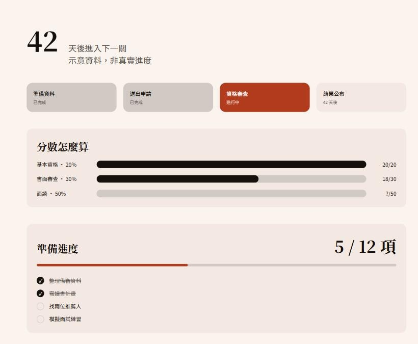
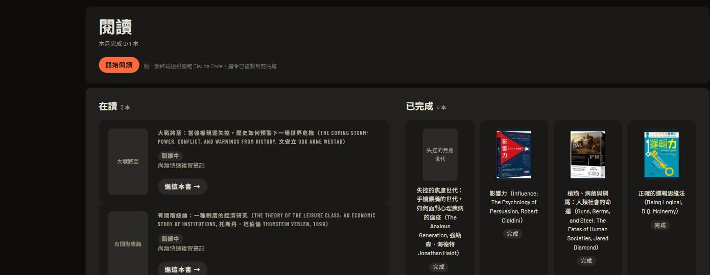
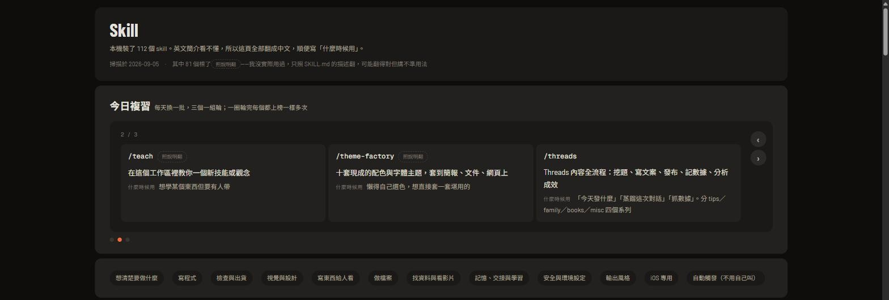

準備一件需要長時間累積的事，進度常常散落在腦子裡跟備忘錄裡，看不到全貌，也不知道自己現在卡在哪一段。
▶ 試玩 demo
總覽、閱讀、技能、Threads、消費、每週六個頁面都可以逛，任務清單能打勾。
問題
不管是準備考試、申請一個學程，還是任何拆成好幾個階段的長期目標，中途最容易迷失的不是「有沒有做」，而是「做到哪、還剩多少、現在該做什麼」。
怎麼做
自己做了一個任務追蹤工具：倒數天數、里程碑時間軸、依權重計算的分數條、還沒做完的任務清單，一頁看完現在的狀態。

真實版本裡的日期、機構、聯絡人都是我自己的申請進度，不方便公開，這裡看到的數字是示意，版面跟互動邏輯跟實際使用中的工具相同。
同一套系統，套進不同資料
這套暖色紙感、單一強調色、膠囊形進度條的視覺語言，也用在同一個工作站的其他頁面——這兩張是真實畫面，沒有經過改造。


視覺設計
暖色紙感背景，統計數字統一用墨色，只留一個強調色標記「現在在哪一關」，進度條做成膠囊形，數字對齊用等寬字體。這套語言後來也直接用在這個作品集網站上——你現在看到的強調色，就是同一支橘紅。
我的角色
一個人做的，自己每天在用。
想把一堆散落的資料整理成一眼看懂的畫面？寫信聊聊 →